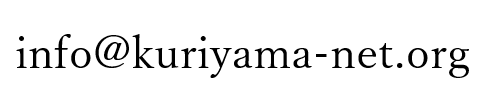

AS150362へようこそ
AS150362では、ASの運用を通じてインターネットへの理解を深める活動をしています。
About
当団体は、ASの運用を通じてインターネットへの理解を深めることを目的とした非営利団体です。Member
Sponsor
当団体は、Mamireimu Net Work's様より支援を受けています。Link
Contact
連絡を取りたい方は下記までお願いします
※BOT対策で画像を表示しています
